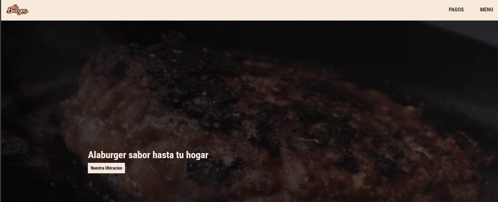
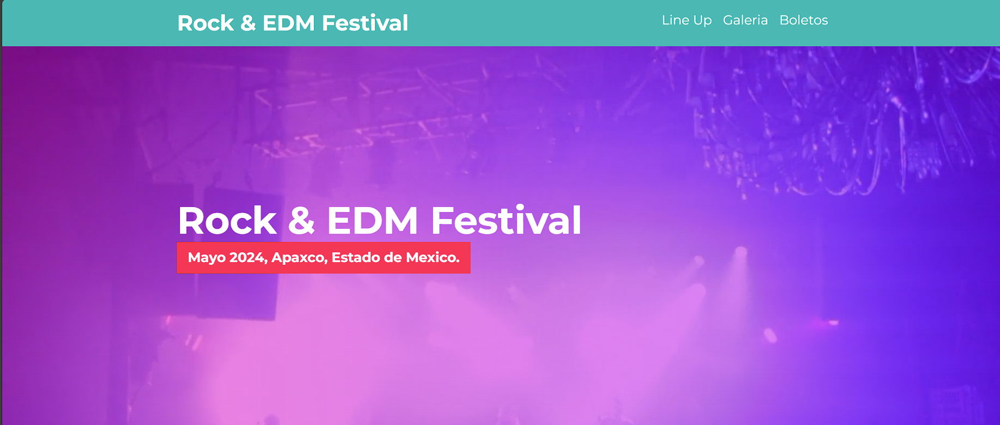

Mis proyectos

Proyecto Bienes Raíces
Tecnologías: HTML, CSS, JavaScript, SASS, Gulp
Desarrollé una página estática de bienes raíces utilizando herramientas modernas como SASS para estilizado eficiente y Gulp para automatización de tareas. Este proyecto sienta las bases para una versión dinámica que incluye PHP y SQL, donde se integran funcionalidades avanzadas como consultas y almacenamiento en base de datos.
Ver proyecto

Menu Digital-Alaburger Apaxco
Tecnologías: HTML, CSS, JavaScript
Este proyecto consistió en la creación de un menú digital atractivo y funcional para un restaurante. La idea principal fue facilitar el acceso al menú de manera rápida y visualmente agradable, mejorando la experiencia del cliente en línea.
Ver proyecto

Festival de Música - Proyecto Ficticio
Tecnologías: HTML, CSS, JavaScript
Diseñé y desarrollé un proyecto ficticio para un festival de música, enfocado en practicar la implementación de una galería interactiva. Este sitio destaca por su diseño dinámico y funcionalidades desarrolladas con JavaScript, lo que permite explorar el contenido de forma atractiva e intuitiva.
Ver proyecto